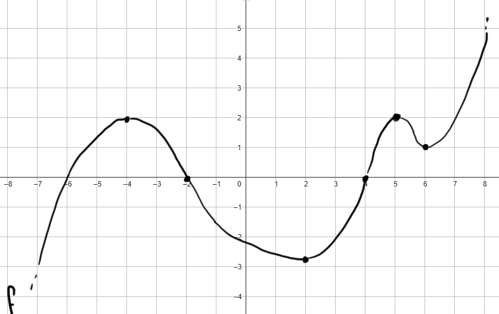

Stabilire gli intervalli di monotonia della funzione
\[
f(x) = e^{\frac{-3x^2 -6x - 3}{-2x + 5}}
\]
Consideriamo la funzione \(f\) rappresentata nel seguente grafico

Stabilire se le seguenti affermazioni sono vere oppure false.
Motivare la propria risposta.
-
La funzione \(f'\) è positiva per \(x \in (-6\,,\,\,-2)\)
-
La funzione \(f'\) si annulla per \(x = 6\).
Indichiamo con \(F\) una primitiva di \(f\), ovvero una funzione tale che \(F' = f\).
-
\(F\) è crescente per \(x \in (4\,,\,\,+\infty)\)
-
\(F\) tende a \(-\infty\) per \(x \rightarrow -\infty\)